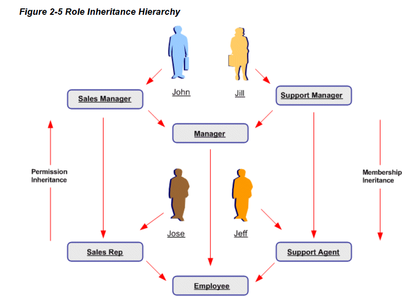

- Role Based Access Control (RBAC)
Enables organizations to create roles based on specific job functions, and to assign these roles the appropriate permissions. With
RBAC, administrative privileges and user access are determined by assigning
individuals the appropriate roles.
With RBAC, access control is defined through roles, and user access to Applications is
determined by the roles granted to the user. Access control in Oracle Applications
closely follows the RBAC ANSI standard (ANSI INCITS 359-2004) originally proposed
by the National Institute of Standards & Technology (NIST), which defines a role as "a job function within the context of an organization
with some associated semantics regarding the authority and responsibility conferred on the user assigned to the role."
A role can be configured to consolidate the responsibilities, permissions, function
security and data security polices that users require to perform a specific function.
Users are not required to be assigned the lower-level
permissions directly, since permissions are implicitly inherited on the basis of the roles
assigned to the user. This simplifies mass updates of user permissions, since an
organization need only change the permissions or role inheritance hierarchy defined for
a given role, and the users assigned that role will inherit the new set of permissions
automatically.
Organizations can define roles that closely mirror their business situation.
Some members of the organization will probably be assigned more than one role.
Roles and role assignments are stored in the workflow directory, which is interpreted by the
security system at runtime.
Role Categories
Administrators can create role categories to bundle roles and
responsibilities to make the process of searching for roles and responsibilities easier. For
example, all sales and marketing related roles could be included in the Sales &
Marketing category.
Role Inheritance Hierarchies
Roles can be included in role inheritance hierarchies that can contain multiple
subordinate roles and superior roles.
The following example demonstrates how role inheritance
hierarchies can greatly simplify user access control and administration.
